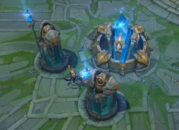
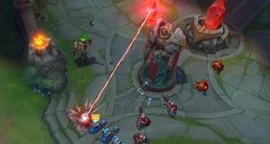
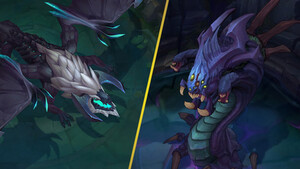

League of Legends es un juego de estrategia por equipos en el que dos equipos de
cinco campeones se enfrentan para ver quién destruye antes la base del otro.
Elige de entre un elenco de más de 140 campeones para realizar jugadas épicas,
asesinar rivales y derribar torretas para alzarte con la victoria.
Objetivo
El nexo es el corazón de las bases de los equipos.
Para ganar la partida, hay que destruir el nexo enemigo.

Estructuras
Para llegar hasta el nexo enemigo, tu equipo tendrá que avanzar por al menos una calle.
Hay estructuras defensivas que bloquean tu avance: las torretas y los inhibidores.
Cada calle cuenta con tres torretas y un inhibidor. Además, cada nexo tiene dos torretas
adicionales.

Monstruos neutrales
Entre las calles se encuentra la jungla, en la que habitan monstruos neutrales
y plantas mágicas. Los dos tipos de monstruos más importantes son el Barón Nashor
y los dragones. Acabar con estas unidades otorgará a tu equipo mejoras únicas y,
en ocasiones, te ayudará a darle la vuelta a la partida.

Mapa
El mapa se compone de 3 calles, la superior, la central y la inferior y entre las mismas
se enceuntra la jungla. Las características de cada calle favorecen a ciertos tipos de campeones y roles.